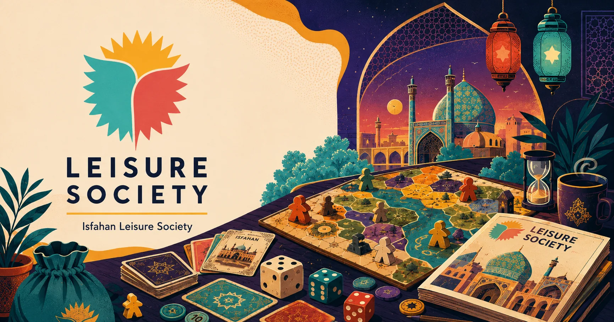
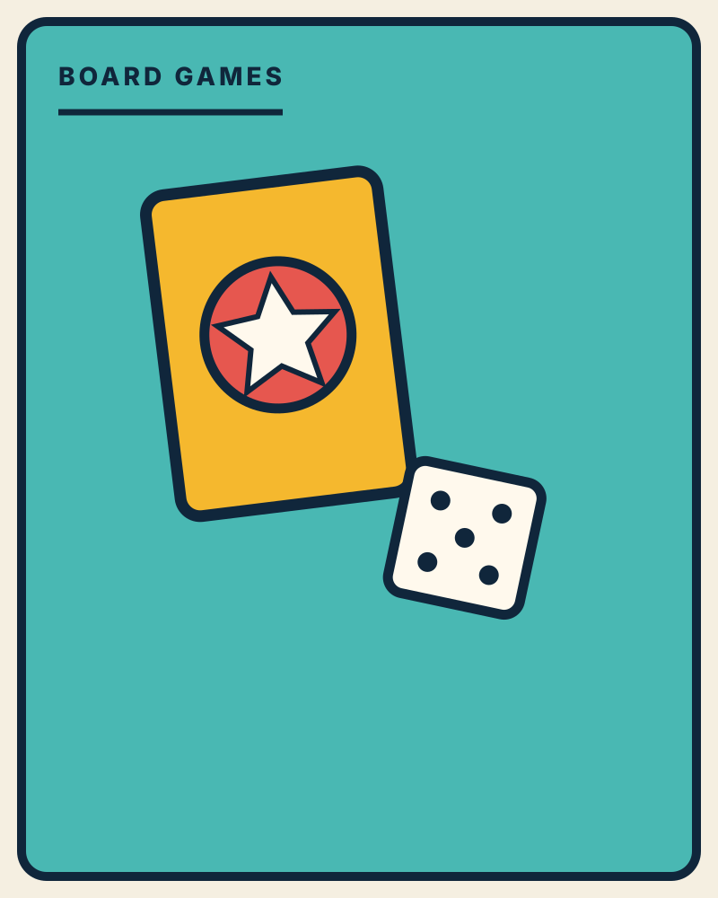
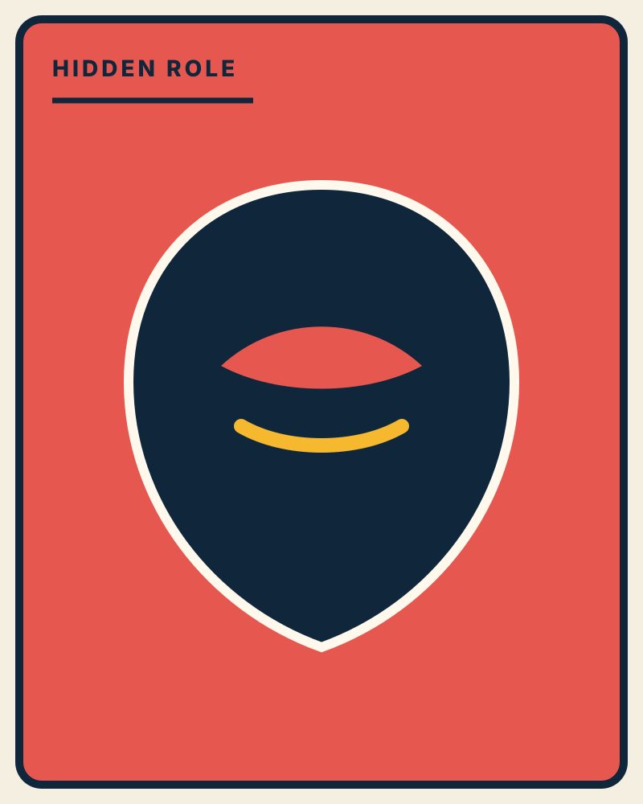
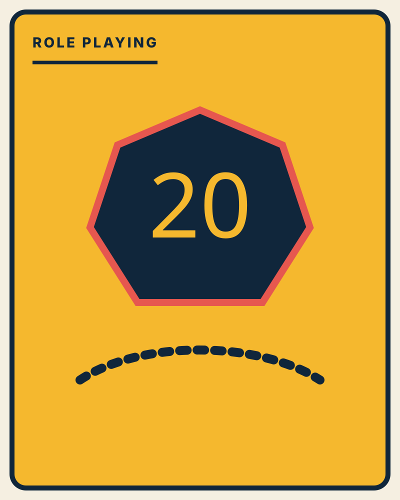
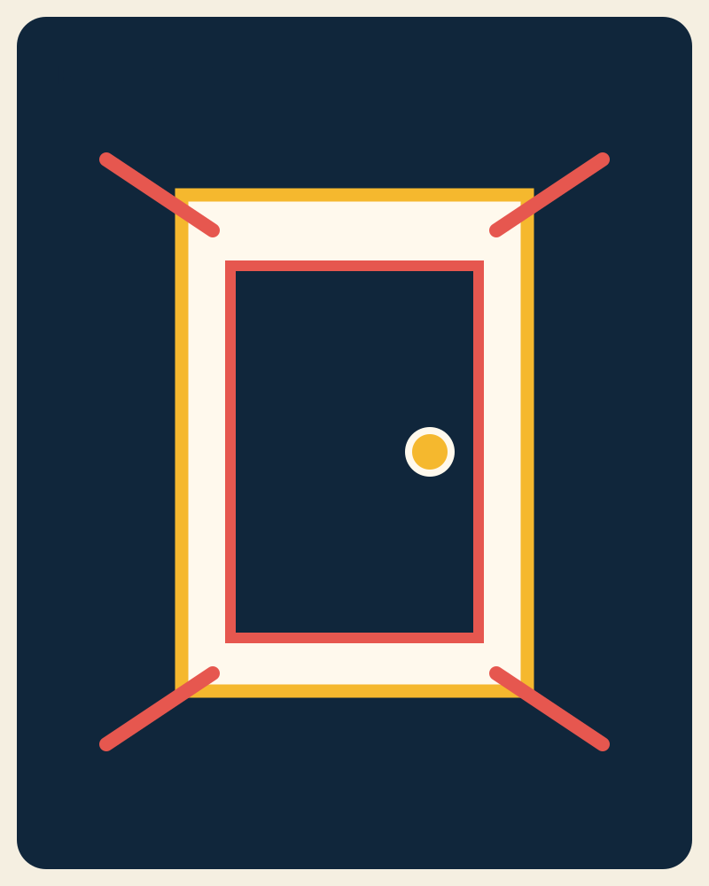
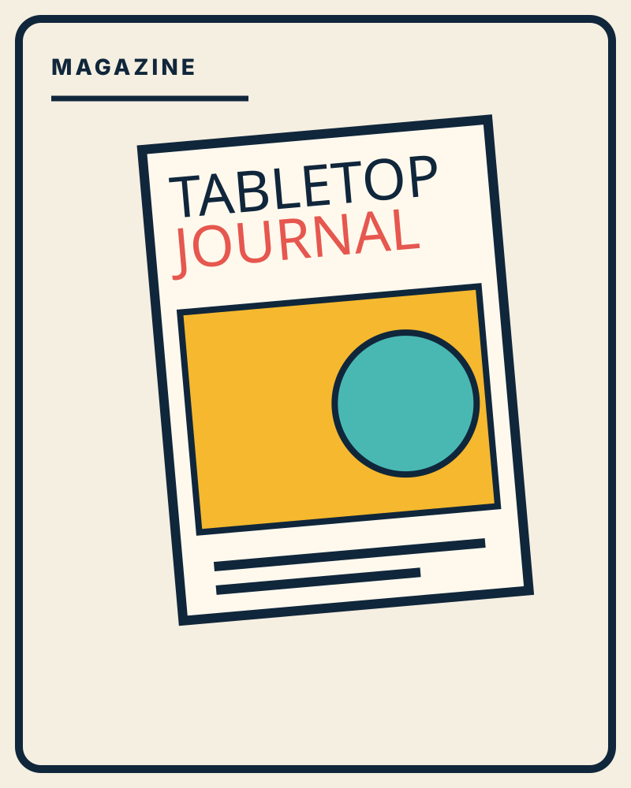
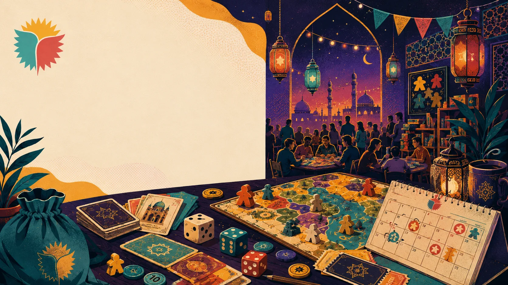
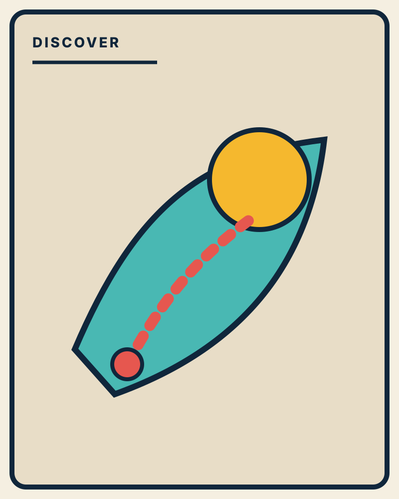

بازی فقط
بازی نیست.
بازی کن، آدمهای تازه پیدا کن و هر هفته یک داستان جدید دور میز بساز. Leisure یک باشگاه، مجله و پایگاه کشف بازی برای آدمهای کنجکاو است.

بازی بعدیت رو پیدا کن
چهار انتخاب کوتاه؛ بعد چند بازی مناسب برای میز شما پیشنهاد میکنیم.
از کدوم دنیا شروع کنیم؟

BOARD GAMESبردگیم
از بازی خانوادگی تا استراتژی سنگین.
02
HIDDEN ROLEنقش مخفی
اعتماد کن، شک کن، نقش خودت رو بازی کن.
03
ROLE PLAYINGنقشآفرینی
داستانی که نتیجهاش به انتخاب تو بستگی دارد.
04
ESCAPE ROOMاتاق فرار
معما، زمان محدود و یک راه خروج.
05
THE JOURNALمجله
راهنما، نقد، مصاحبه و فرهنگ بازی.
Modern Art و Sheriff؛ از مقاله تا میز بازی.
دو بازی تعاملی برای جمعهایی که مذاکره، بلوف و خواندن آدمها را به اندازه تصمیمهای روی میز دوست دارند.
روی میز این هفته
پنج بازی متفاوت برای پنج حالوهوای مختلف؛ از مذاکره و بلوف تا پازل و مسابقه.
رویدادهای پیش رو
از نقش مخفی و پازل تا برنامههای فوتبالی و فرهنگی؛ علاقهمندیات را برای برنامه بعدی ثبت کن.

GAME NIGHT / EVENTS →رویداد فوتبالی
تماشای مسابقه، گفتگو و تجربه جمعی هواداری در کنار آدمهای همسلیقه.
↙
رویداد مافیا
سناریو، گرداننده و یک میز برای استدلال، بلوف و خواندن رفتار دیگران.
↙
رویداد پازل
چالشهای فکری و رقابت دوستانه برای کسانی که از حل مسئله لذت میبرند.
↙
تنهایی اومدی؟
با تیم برگرد.
میز مناسب را پیدا کن، به گروههای بازی نزدیک شو و برای دورهمی بعدی علاقهمندیات را ثبت کن.
عضو کامیونیتی شوCATAN
۲ بازیکن لازم داریم
MAFIA
۴ صندلی خالی
D&D
Dungeon Master آماده است
مجله Leisure
ISSUE #01 — راهنما، نقد، گفتگو و فرهنگ بازی

MODERN ART
یکی از تازهترین پستهای بردگیم Leisure؛ بازی مزایدهای تعاملی که حالا هم در Game Library صفحه مستقل دارد و هم در مجله.
خواندن مطلب ↙SPYFALL
نقش مخفی، پرسشوپاسخ و یک جاسوس که مکان را نمیداند.
مشاهده ↙چالشهای انتخاب اتاق فرار مناسب
تجربه گروه، تعداد نفرات، سختی، ژانر، زمان، بودجه و امکانات؛ چکلیست واقعی Leisure.
مشاهده ↙اوقات فراغت؛ لحظات طلایی پیشرفت
گفتگو درباره انتخاب داوطلبانه، خانواده، مهارتآموزی و سرگرمیهای غیردیجیتال.
مشاهده ↙بیرون از میز،
شهر رو هم کشف کن.
از کافهبازی و معماری تا موزه، پارک و تجربههای شهری؛ راهنماهایی برای وقتی که میخوای از میز بازی فاصله بگیری ولی هنوز یک انتخاب خوب داشته باشی.
همه راهنماها↙
LOCALPLAY
بهترین کافه بازیهای اصفهان
گیمکافهها و فضاهایی برای بردگیم، مافیا و تجربههای جمعی در اصفهان.
کشف این راهنما ↙خانههای تاریخی تهران
خانه مقدم، مدرس و کاظمی؛ سه توقف برای کشف معماری و خاطره شهری تهران.
کشف این راهنما ↙شهربازیهای یزد
طلایی یزد، ستاره، پارک شادی و پارک کوهستان؛ چند انتخاب برای یک روز پرانرژی.
کشف این راهنما ↙
THE
CLUB
بازی بهتره وقتی
آدمهاش رو پیدا کنی.
عضویت، رویدادهای ویژه، معرفی بازی، دورهمی و پیدا کردن همبازی — همه در یک خانه.
 OUR TABLE / ISFAHAN
OUR TABLE / ISFAHANیک خانه برای بازی، کشف و ارتباط.
Leisure یک خانه برای پیدا کردن بازی، خواندن و یادگرفتن، شرکت در رویداد و پیدا کردن آدمهایی است که دوست دارند دور یک میز جمع شوند.
بین دو دور بازی، یه استراحت خوشطعم.
نوشیدنی گرم و سرد و میانوعدههای کافه آپادانا را روی موبایل ببین و درخواست سفارش را مستقیم بفرست.